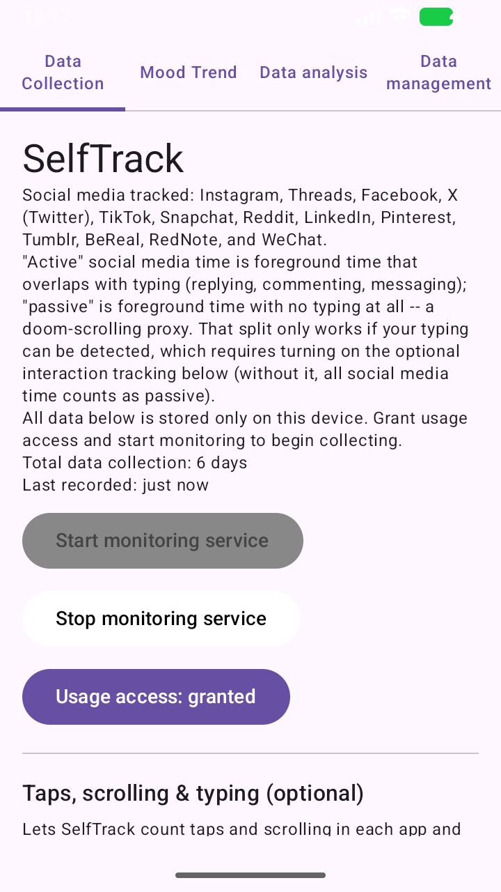
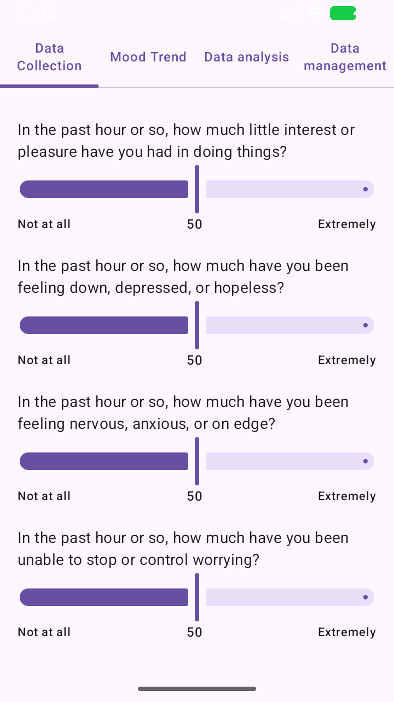
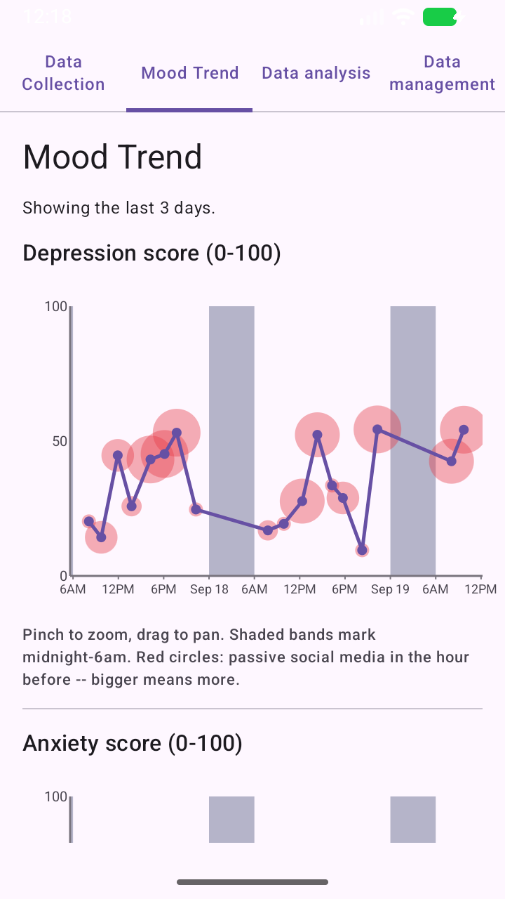
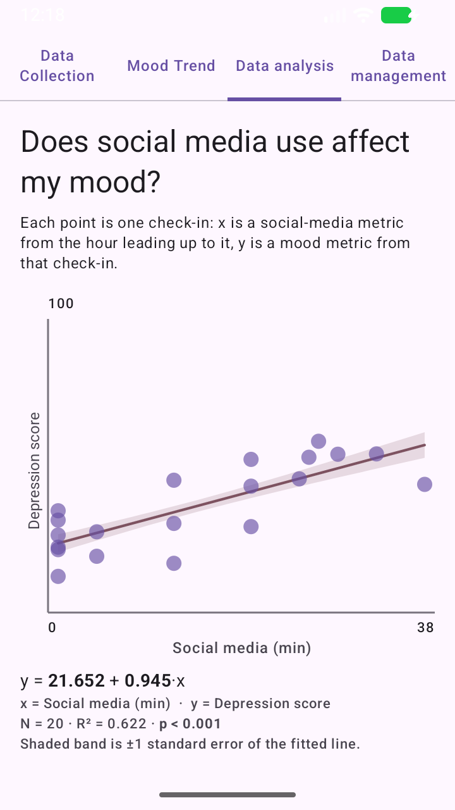

Does how you use your phone say something about how you feel?
SelfTrack is an Android app that notes which apps you use, asks how you're feeling every so often, and then shows you whether the two seem to move together. Everything stays on your phone.
Download for Android How it works
SelfTrack is built by Chinese Art Lab, a 501(c)(3) nonprofit organization. It is a personal tool: we never receive your data.




Screenshots use made-up demo data.
What you get
Private by design
The app has no internet permission. Your data lives on your phone and never goes to us. It leaves only if you export it yourself.
You are in control
Pause, exclude apps, withdraw consent, or delete everything with one button.
Your own insights
See charts and a plain-language explanation of whether social media time and your mood move together.
SelfTrack is not a medical tool. It is for self-reflection and does not diagnose or treat anything.
If you are struggling, please talk to a healthcare professional. In the US you can call or text 988.